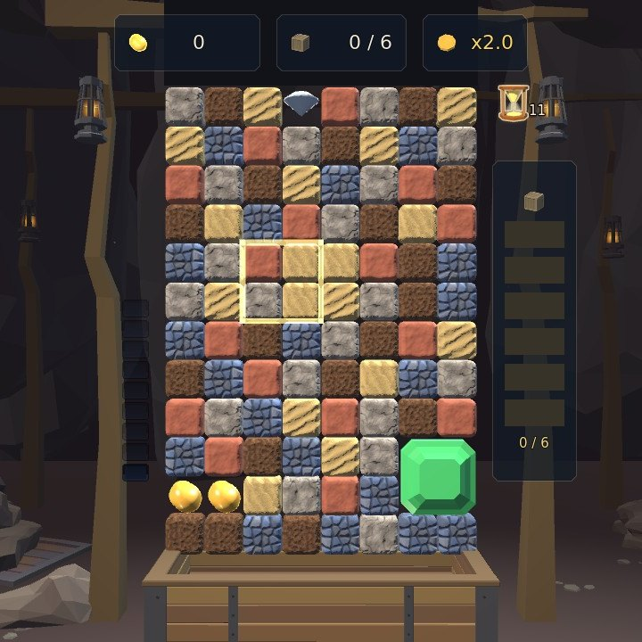
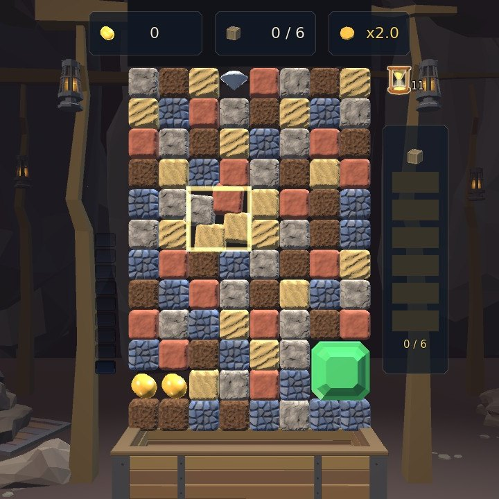
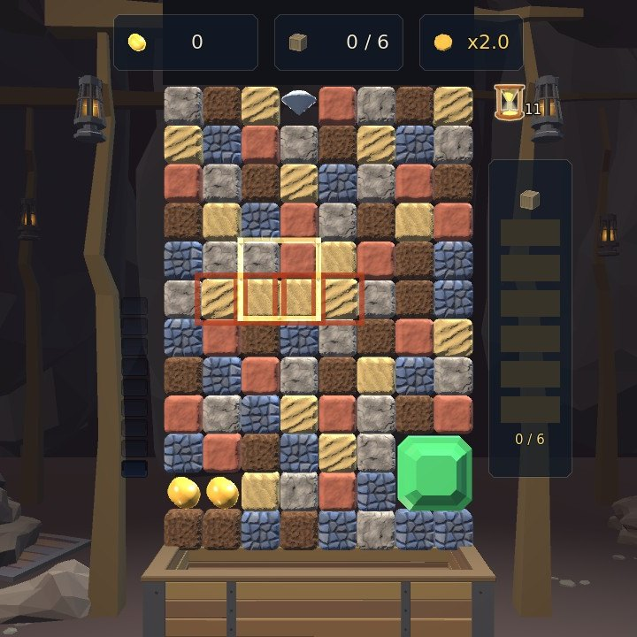
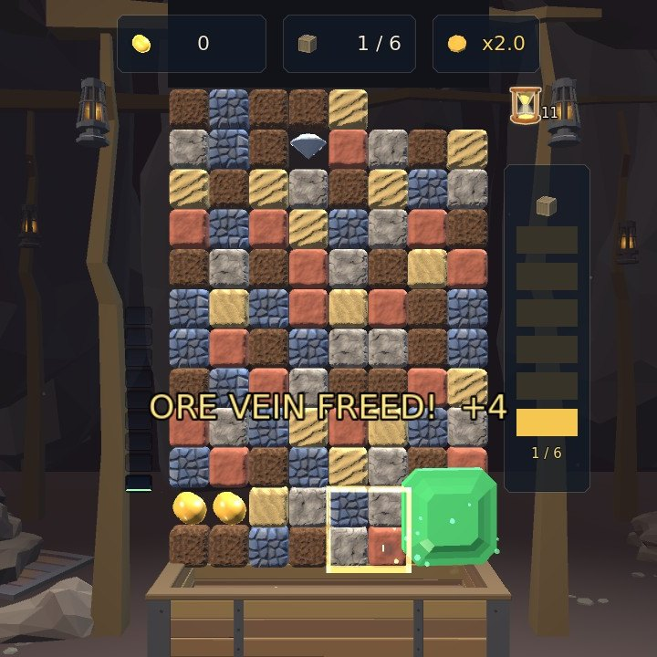
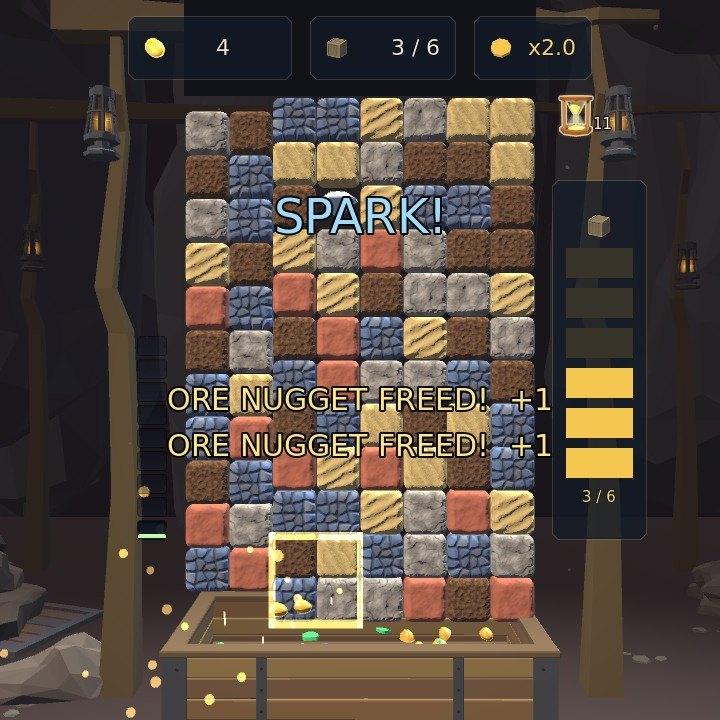
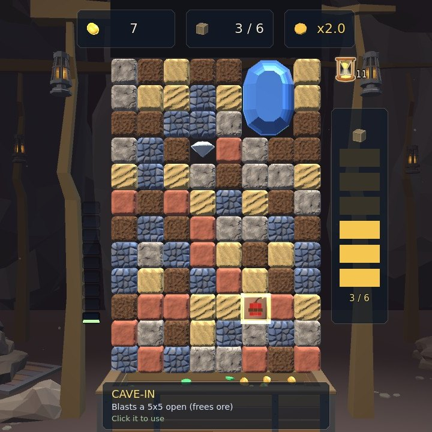
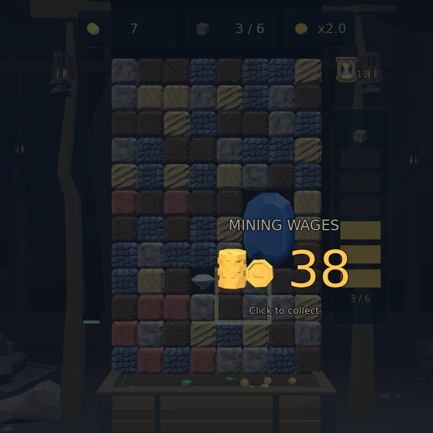

Mining
Turn the rock face four stones at a time, crumble runs of one colour, and dig the ore chunks down into the cart.
Step by step
-

1The cursor1The cursor Step 1Frame four stones
The square on the rock face is your cursor, and it holds four stones at once. Move it with the mouse or the arrow keys.
-

1A quarter turn1A quarter turn Step 2Turn them
Right-click or C turns the four a quarter clockwise; left-click or X turns them back the other way.
-

1A run of four1A run of four Step 3Line up three of a colour
Three or more stones of one colour in a row or a column crumble away, and the stones above fall into the gap. A fall can line up the next run all by itself.
-

1The ore chunk1The ore chunk Step 4Dig a chunk down to the floor
Ore chunks never crumble. Clear the rock under one and it drops, and at the floor it is dug out into the cart. Chunks are the only thing that scores.
-

1Two on one turn1Two on one turn Step 5Two at once is a combo
Free two chunks with one turn and both are dug out together, for a combo bonus.
-

1Dynamite2What it does1Dynamite2What it does Step 6Big clears drop tools
A big clear can leave a tool in the rock. Frame it (the cursor shrinks to a single stone) and click to use it: dynamite blasts a hole five stones across.
-

1Your wages1Your wages Step 7Fill the meter
Every chunk you dig lights a pip on the meter beside the board; light them all to finish the seam and collect your wages. The faster you do it, the more the seam wage pays, up to double, and rarer stones pay more: ore, then emerald, sapphire and diamond.
The rules, as the game tells them
- Move the 2x2 cursor with the arrow keys or the mouse
- Rotate it: C / right-click = clockwise, X / left-click = counter-clockwise
- Line up 3+ of the same color to crumble that rock
- Clear the rock UNDER an ore chunk to dig it down to the floor — chunks are the only thing that scores
- Dig several chunks in one move for a combo bonus
- Big clears drop a TOOL — frame it (the cursor shrinks to 1x1) and click to use it
- Light every pip on the chunk meter beside the board (one per chunk you dig) to finish the seam
- The faster you dig the quota out, the more the seam wage pays — up to double (the SPEED PAY counter)
- The rarer the stone, the more Cinder Tor pays for it: ore, then emerald, sapphire, and diamond
Word for word from the game: in play the same text sits behind the ? on the board, so this page cannot drift from it.